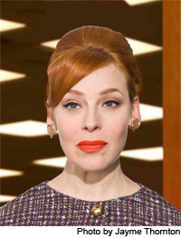

past performance | ||
|  |
THE MAD WORLD OF MISS HATHAWAY Written by & Starring | |
|
After sold out shows in December and again in May, comes the eagerly anticipated 7th installment of the original musical parody, “The Mad World of Miss Hathaway” at The Wild Project. This episode finds the brand new offices of Spencer-Colfax Raper & Shenanigans struggling to make their mark in the cut throat world of Madison Avenue in 1966. While desperately trying to keep their clients from jumping ship, know it all head of the secretarial pool, JoAnne Hathaway tries to keep old school ad man, Randall Spencer (in the midst of his mid-life crisis) from ruining his life when he marries a young ambitious duplicitous secretary whose outrageous spending habits threaten to take down the new fledgling company before it can even get it's feet off the ground. Written by and starring Angela Di Carlo (The Downtown Series at Feinstein's, Just to be Polite at Joe's Pub) as JoAnne Hathaway the all knowing red headed head of the secretarial pool. With a hilarious supporting cast including, Bradford Scobie (Moisty the Snowman), Jill Pangallo (Happy Go Sad, Jason & Jill: Craft Your Life), Kyle Supley (TheVintage Vantage Variety Show) & Patrick Johnson (The Emperor's New Codpiece) With Kyle Forester (Ladybug Transistor, Crystal Stilts) on piano. "The Mad World of Miss Hathaway” was chosen by Time Out New York as a critics pick, featured in the Village Voice as a Voice Choice, and written up in Show Business Weekly.com, Next Magazine, Capitol New York, Glittersnipe and Gayletter. After six hilarious episodes, it has quickly developed a devoted cult following among many fans of Mad Men (and non-fans as well!) To see clips, pictures and past episodes, check out our Facebook page at: http://www.facebook.com/TheMadWorldOfMissHathaway | ||
upcoming performances |
|||
 |
|||
| EVQ Film Festival 2018 August 20-25 |
|||
performance archives |
|||
| 2018 | 2017 | 2016 | 2015 |
| 2014 | 2013 | 2012 | 2011 |
| 2010 | 2009 | 2008 | 2007 |